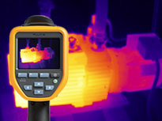

|
|
|
 |
| | |  | | | | | | | Obtenez une caméra thermique conçue pour les environnements industriels les plus difficiles
| Acquérez une caméra infrarouge qui repose sur plus de 65 ans d'expérience industrielle. Chaque caméra est fabriquée dans le plus grand respect des normes Fluke en matière de robustesse, fiabilité et précision. Elles sont conçues pour effectuer des inspections complètes et précises au quotidien, quel que soit l'environnement. Choisissez parmi les modèles de la série Performance, accessible et polyvalente, de la série Professional, qui offre une qualité d'image supérieure, ou de la série Expert, dotée d'un écran tactile 14.4 cm.
| Série Performance | | Série Professionnelle | | Série Expert | |  | |  | |  | | TiS10, TiS20, TiS40, TiS45, TiS50, TiS55, TiS60, TiS65, TiS75 | | Ti300, Ti400, Ti450, Ti480 | | TiX500, TiX520, TiX560, TiX580 | | • | Bonne qualité d'image | | • | Abordable | | • | Compatible Fluke Connect® | | • | Simple d'utilisation | | | | • | Résolution jusqu'à 640 x 480 | | • | Mise au point MultiSharp™ (Ti450) | | • | Mise au point automatique LaserSharp® | | • | 1280 x 960 avec le mode SuperResolution (TiX480) | | • | Objectifs IR en option | | | | • | Écran LCD 5,7 pouces | | • | Ecran rotatifs pour manœuvrer l'appareil aisément autour, par-dessus et par-dessous les objets | | • | Analyses sur la caméra | | • | Objectifs IR en option | | | | | | | | Série
Performance | Série
Professionnelle | Série
Expert | Autres solutions
de mesure
de température | Détecteurs
de gaz | | | | Les caméras thermiques de la série Performance proposent une bonne qualité d'image à un prix abordable. Avec une résolution allant jusqu'à 320 x 240, il vous est possible de voir, même à distance, chaque détail de l'image, et ainsi de détecter un problème potentiel. Grâce à sa conception robuste et son interface utilisateur facile à utiliser, ces caméras sont idéales pour les tâches de dépannage. Chaque modèle est fourni avec l'application Fluke Connect® et une batterie intelligente équipée d'un indicateur de charge à LED. La plupart des modèles sont pourvus d'une carte SD amovible et d'une sangle réglable solide. Comparer les modèles » | | | | | | Vidéos | | | | Les caméras thermiques de la série Professional vous fournissent des images parfaitement nettes aux détails précis. Effectuez une mise au point claire et précise sur tout le champ angulaire avec la mise au point MultiSharp™ (Ti450) ou visez votre cible avec la vitesse et la précision du laser avec la mise au point automatique LaserSharp®. Tous les modèles sont équipés de Fluke Connect, de fonctionnalités avancées de documentation et d'affichage, et d'un écran tactile LCD haute résolution pour que vous puissiez observer clairement ce que vous êtes en train de mesurer et naviguer rapidement dans le menu. Mesurez des températures élevées jusqu'à 1 200 °C (2 192 °F). Ajoutez un téléobjectif ou un objectif grand angle en option pour bénéficier de détails plus précis, de près comme de loin. Comparer les modèles » | | | | | | Vidéos | | | | Les caméras infrarouges de la série Expert fournissent des images extrêmement détaillées, et les grands écrans LCD 5,7 pouces vous garantissent un affichage haut de gamme. L'objectif orientable à plus de 240° vous permet de manœuvrer l'appareil autour, par-dessus et par-dessous les objets, afin de capturer les images les plus inaccessibles. Mesurez des températures élevées, jusqu'à 1 200 °C (2 192 °F), et profitez des systèmes de mise au point les plus avancés afin de capturer des images immanquablement nettes, y compris la technologie MultiSharp™, qui vous permet d'obtenir des images nettes sur tout le champ angulaire, de près comme de loin ; la technologie LaserSharp®, qui vous permet d'effectuer une mise au point instantanée de votre cible ; et la mise au point manuelle. Tous les modèles sont équipés de Fluke Connect. Ajoutez un objectif infrarouge en option pour bénéficier de détails plus précis, de près comme de loin. Comparer les modèles » | | | |
| | Etudes de cas | Vidéos | Brochures | Accessoires | | | | Notes d'application, études de cas par secteur d'industrie et d'autres outils d'applications liées à la thermographie dans différentes applications. | | | | Télécharger une brochure de produit. | | | | | |
|
|
|
|
|